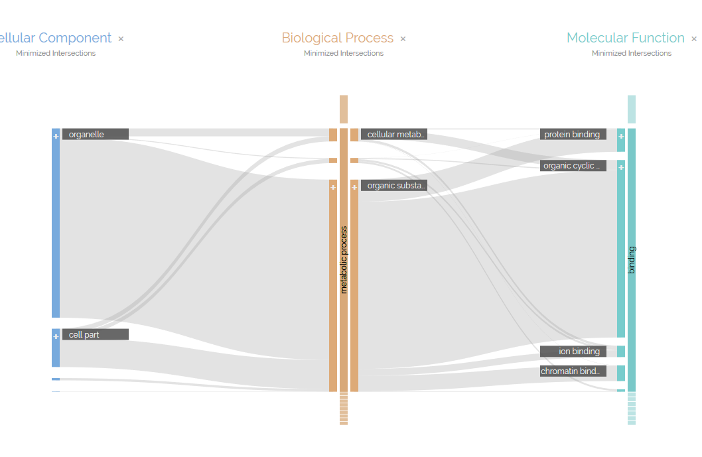

Publications
2021
-
Customizable Coordination of Independent Visual Analytics Tools
Lars Nonnemann, Marius Hogräfer, Heidrun Schumann, Bodo Urban, Hans-Jörg Schulz
Proc. of the International EuroVis Workshop on Visual Analytics (EuroVA'21), (2021)
2020
-
Exploring vibrotactile cues for interactive guidance in data visualization
Wenkai Han, Hans-Jörg Schulz
Proc. of the 13th International Symposium on Visual Information Communication and Interaction (VINCI '20), (2020) -
Beyond Trust Building - Calibrating Trust in Visual Analytics
Wenkai Han, Hans-Jörg Schulz
Workshop on TRust and EXperience in Visual Analytics at IEEE VIS 2020, (2020) -
The State of the Art in Map-like Visualization
Marius Hogräfer, Magnus Heitzler, Hans-Jörg Schulz
Computer Graphics Forum Vol.39, (2020) -
Progressive Parameter Space Visualization for Task-Driven SAX Configuration
Sebastian Bugge-Loeschcke, Marius Hogräfer, Hans-Jörg Schulz
Proc. of the International EuroVis Workshop on Visual Analytics (EuroVA'20), (2020) -
Sketchy Rendering to Aid the Recollection of Regular Visualizations
Michael Reidun Engelbrecht Larsen, Wenkai Han, Hans-Jörg Schulz
Short Paper Proc. of EG/VGTC Conference on Visualization (EuroVis'20), (2020) -
A Layered Approach to Lightweight Toolchaining in Visual Analytics
Hans-Jörg Schulz, Martin Röhlig, Lars Nonnemann, Marius Hogräfer, Mario Aehnelt, Bodo Urban, Heidrun Schumann
Computer Vision, Imaging and Computer Graphics Theory and Applications, (2020)
2019
-
ReVize: A Library for Visualization Toolchaining with Vega-Lite
Marius Hogräfer, Hans-Jörg Schulz
Proc. of the Conference on Smart Tools and Applications in Graphics (STAG'19), (2019) -
The Human User in Progressive Visual Analytics
Luana Micallef, Hans-Jörg Schulz, Marco Angelini, Michaël Aupetit, Remco Chang, Jörn Kohlhammer, Adam Perer, Giuseppe Santucci
Short Paper Proc. of the 21st EG/VGTC Conference on Visualization (EuroVis'19) (2019) -
On Quality Indicators for Progressive Visual Analytics
Marco Angelini, Thorsten May, Giuseppe Santucci, Hans-Jörg Schulz
Proc. of the International EuroVis Workshop on Visual Analytics (EuroVA'19) (2019) -
Lightweight Coordination of Multiple Independent Visual Analytics Tools
Hans-Jörg Schulz, Martin Röhlig, Lars Nonnemann, Mario Aehnelt, Holger Diener, Bodo Urban, Heidrun Schumann
Proc. of the International Conference on Information Visualization Theory and Applications (IVAPP'19), pp.106-117 (2019)
2018
-

Parallel Hierarchies: A visualization for cross-tabulating hierarchical categories
Zana Vosough, Marius Hogräfer, Loïc A. Royer, Rainer Groh, Hans-Jörg Schulz
Computers & Graphics Vol.76, pp.1-17 (2018) -
A Review and Characterization of Progressive Visual Analytics
Marco Angelini, Giuseppe Santucci, Heidrun Schumann, Hans-Jörg Schulz
Informatics Vol.5 No.3, pp.31:1-27 (2018)
{kind=link}